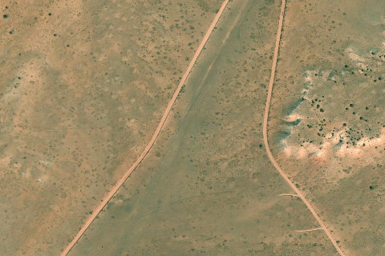

Robbers Roost Flats / Little Y
ROBBERSROOSTFLATS · UT

Aerial imagery source: Esri, Vantor, Earthstar Geographics, and the GIS User Community
| Identifier | ROBBERSROOSTFLATS |
|---|---|
| State | UT |
| Runway length | 2,530 ft |
| Surface | Dirt |
| Runway | 2/20 |
| Elevation | 5,820 ft |
| Ownership | blm |
| CTAF | 122.9 |
| Coordinates | 38.3713, -110.3078 |
Notes
[ubcp] Description: Offering access to Blue John Canyon this airstrip sits between two converging roads that see quite a bit of traffic. During our short visit we encountered several motorists and campers likely headed to the slot for canyoneering. The Little Blue trailhead is approximately a quarter of a mile north of the airstrip. While the UBCP works with the BLM to officially designate the airstrip as an airstrip, the nearby road (Ekker Ranch Road) was recently designated as an OHV-Open route meaning aircraft may utilize the road while exercising caution for other road vehicles utilizing the roads nearby. Runway: The runway is in relatively rough condition best suited for larger tire aircraft. It is sloped uphill to the north but takeoffs and landings can be accomplished in either direction. Use caution for deep rutted cow tracks abeam the runway as these could be disastrous for smaller tire aircraft. There are signs of aircraft visiting here with about 1500ft of usable runway. The roads may look like inviting places to land but either side of both roads have high berms that most aircraft wings will not clear. This airstrip is on a deceptively high mesa somewhere around 5800’MSL so density altitude should also be considered. Approach Considerations: There are plenty of campers in the area so keeping a low noise profile would be helpful. Otherwise no obstructions. Parking: Plenty of parking and camping. No cell coverage.